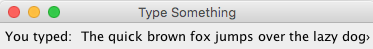

Create a JFrame with a JPanel and an empty JLabel. Every time a key is pressed, add that character to the JLabel's text. It should look like a basic text editor:
Every time the BACKSPACE key is pressed, the last character is erased from the JLabel. Save that deleted character onto a Stack of erased characters.
Choose a key to be the Undo key (e.g. Insert). Every time the "undo" key is pressed, the top Character is popped off the "erased" Stack and added back to the JLabel.